Everything the app does, in plain language — from setting up Event Details to reading the Craft Prize drawing. The first half covers regular features in the order you'll actually meet them during a game night; Tips & Tricks near the bottom covers the power-user stuff tucked into Advanced Settings, plus a few shortcuts that aren't obvious from just looking at the screen.
No questions match that search.
The night in order: fill in Event Details, add your teams, score each round as it happens, then read Final Results and run the Craft Prize drawing.
It's a live scoring tool for a trivia night: 4 rounds of wager-based questions, a bonus question in Rounds 1 and 3, a Halftime Wager and a Final Wager, running standings the whole game, and a Craft Prize drawing at the end. It also builds the exact PDF and XLSX scoresheets the trivia company uses to record the night.
Open Settings (⚙️ top right) and click 🧪 Try Example under Sample Data. It loads a simulated, fully-scored 11-team game — Event Details filled in, every round scored, both wagers resolved, and (deliberately) a genuine tie in Final Results — so you can click around every screen without setting anything up yourself.
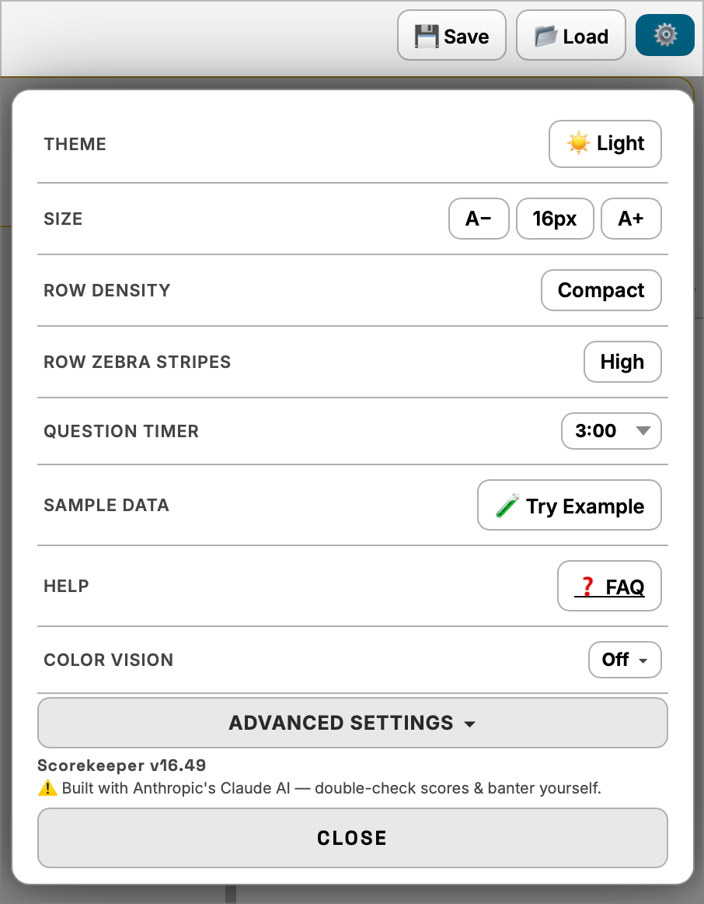
Yes — every change autosaves to the browser as you go. See Autosave & Resume below for what happens if you close the tab or reload mid-game.
The fields at the top of the app — who, where, and what's on the line tonight.
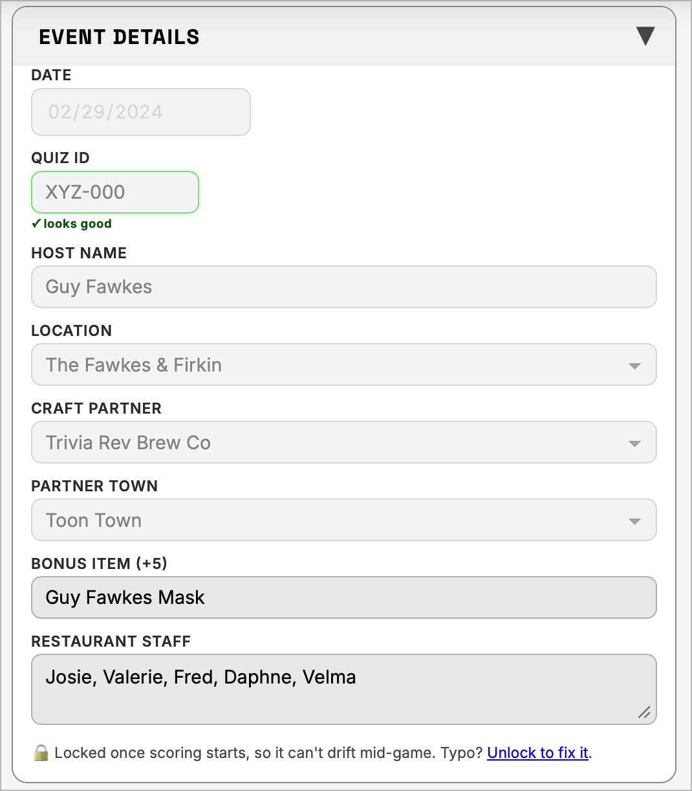
Once scoring starts, Event Details locks so it can't drift mid-game — a wager gets scored, a team's added, whatever the trigger, the section shows a 🔒 note with an Unlock to fix it link right there for a typo. That link does the same thing as the Edit Locked Fields toggle in Advanced Settings — see Tips & Tricks.
Add, rename, and remove teams whenever you need to — even mid-game.
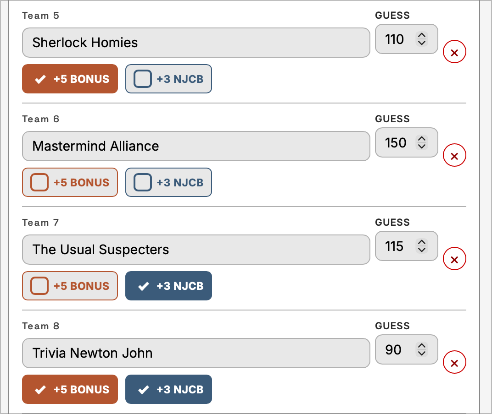
Yes. Unlike Event Details, team names, guesses, and the + Add Team button all stay open the entire game — handy for a team that walks in late or a name you misheard at check-in. The team cap is 100 teams; past that, the Add Team button is replaced with a note saying the cap's been hit.
+5 Bonus is checked when a team brought that night's Bonus Item (whatever you entered in Event Details). +3 NJCB is checked when a team shows their NJCB membership card. Both add straight to the team's total, and both get stripped back out again before Score Guess is compared to the final score — see Final Results & Ties for why that matters.
It's each team's pregame guess at their own final score (1–146), used purely as a tiebreaker — the team whose guess lands closest to their actual score wins a tie. A team with no guess entered shows an orange ⚠ missing warning next to their field, and the Teams section header tallies how many are still missing, so the warning doesn't quietly disappear once scoring starts. A missing guess never blocks scoring — it just shows as "—" instead of a number in Final Results.
The confirmation prompt says exactly what's being wiped: the team itself, plus every round, bonus, and wager score already entered for them. There's no separate undo — if you meant to keep the data, cancel the prompt instead. Once confirmed, every other team's data re-indexes cleanly (no gaps, no shifted scores).
Four rounds, four questions each, wager-based scoring.
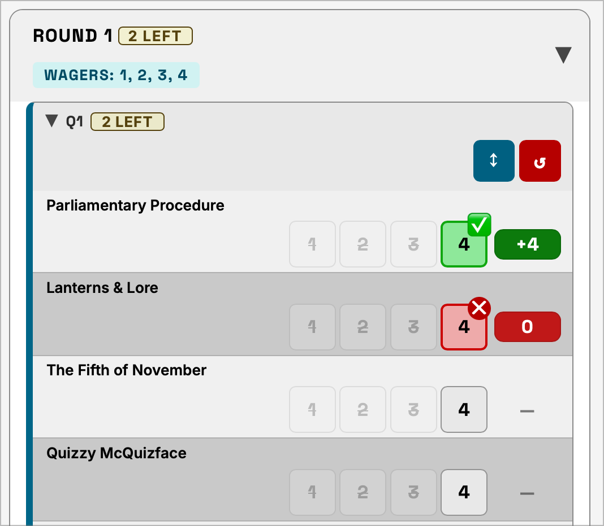
Each question has 4 wager buttons (Round 1: 1–4, Round 2: 1/3/5/7, Round 3: 2/4/6/8, Round 4: 3/6/9/12). Click a team's chosen wager once and it turns green (correct); click that same wager again and it turns red (incorrect); click it a third time and the answer clears entirely. A team can only use each wager value once per round — trying to reuse one that's already assigned to a different question is silently blocked rather than creating a duplicate.
A separate bonus round worth 0–4 correct answers × 5 points each, entered as a single count per team rather than four individual wager clicks.
The app watches every question as it's scored — if every team ends up marked correct on the same one, a gold "🍺 Beer Round! Everyone got all 4!" banner lights up across that question automatically. Purely a fun celebratory flourish; it doesn't change scoring.
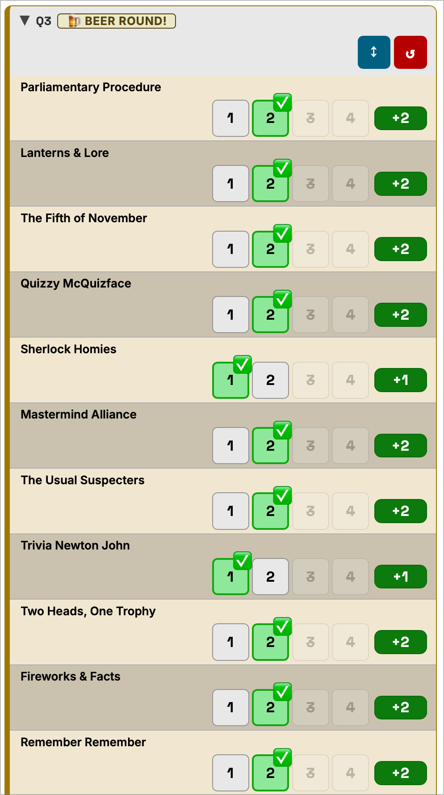
One big wager after Round 2, one after Round 4.
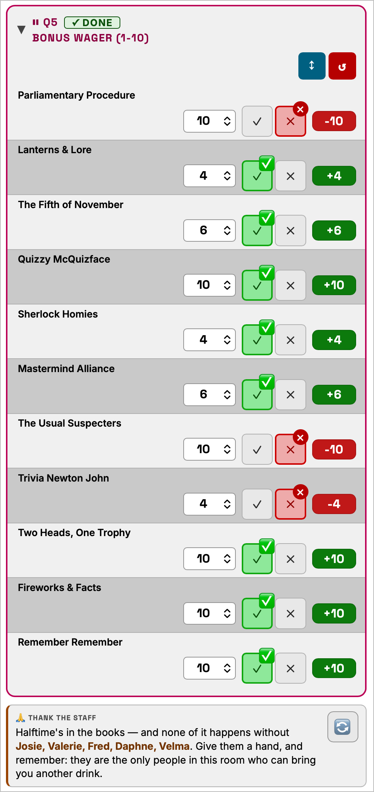
Each team wagers their own amount. Marked correct, that amount is
added to their score; marked incorrect, it's
subtracted. Leaving a team's wager blank simply
contributes 0 — never an error, never NaN.
The 📊 Scores panel tracks every team's running total the whole game.
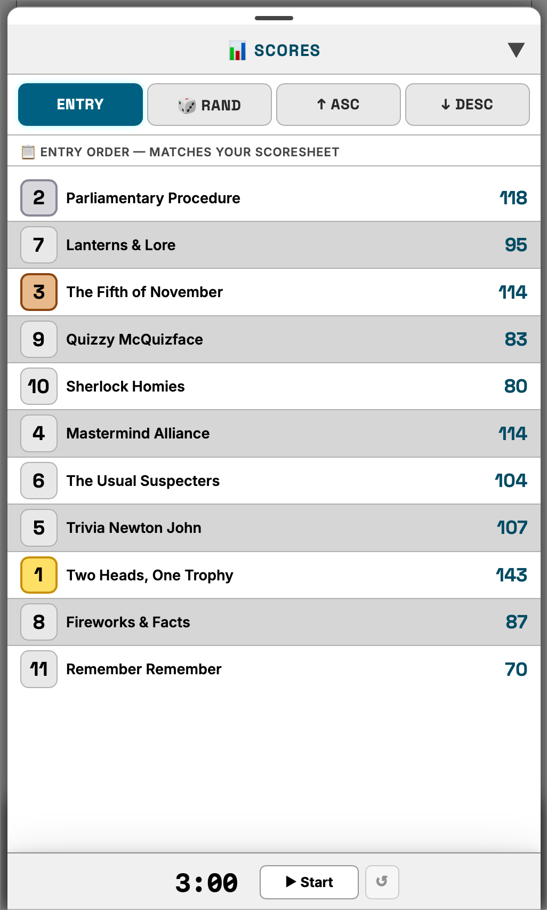
Four ways to order the live scoreboard: Entry is the order teams were added, 🎲 RAND shuffles into a fixed random order (handy for reading results aloud without always starting with the same team), ↑ Asc and ↓ Desc sort by current score.
Standings snapshots that intentionally exclude whichever wager hasn't been resolved yet, so you can read out "the standings going into the wager" without the not-yet-scored wager quietly showing as 0 and misleading the room.
Where the night lands — including how genuine ties are handled.
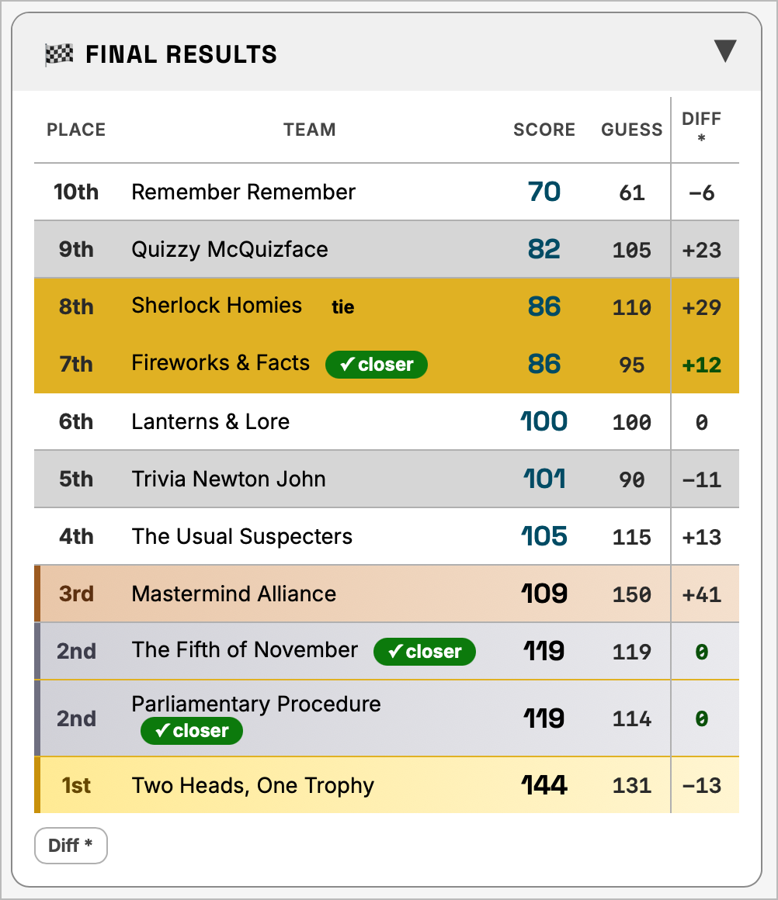
Because +5 Bonus and +3 NJCB are
stripped out of a team's score before it's compared to their guess
— teams generally guess their trivia score, not their
trivia score plus whatever extras they happened to bring. So
Diff = |(Score − Bonuses) − Guess|, and the Final
Results table has a footnote spelling that out.
First tiebreak is Score Guess closeness — whichever team's guess landed nearer their actual (bonus-adjusted) score ranks higher and is marked "✓ closer". If their guesses are also equally close (including two teams that both left the guess blank), that's a genuine, unbreakable tie, and both teams share the exact same place — the next distinct team after them still gets the very next place number, nothing gets skipped. So three teams tied for 5th, with one guessing closer, would read 5th / 6th / 6th rather than 5th / 5th / 5th.
Tap the team's name — see Score Audit in Tips & Tricks.
A random draw for the night's craft beer gift card, from a pool that leaves the top finishers out.
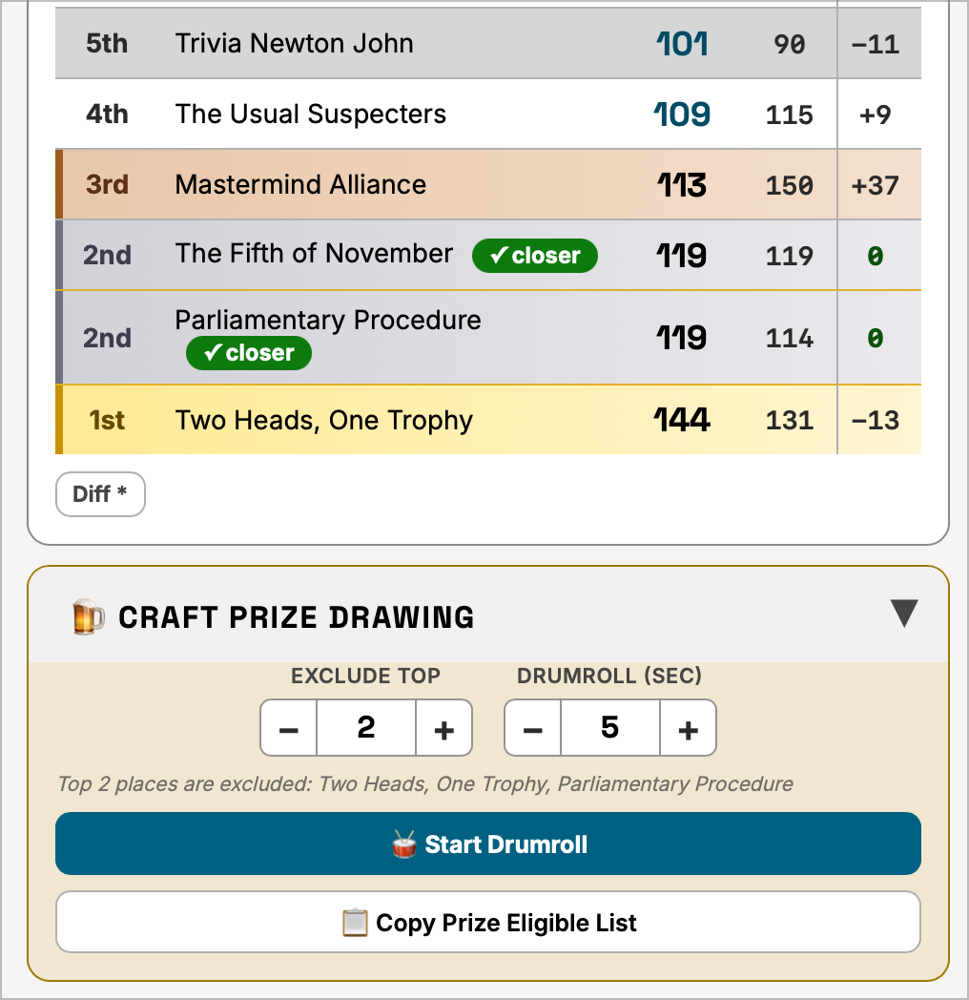
The Exclude Top stepper sets how many of the top-placed teams sit out the drawing (top finishers already have bragging rights; the craft prize is for everyone else). It scales with your roster — you can exclude at most N−1 of the N teams in the game, so one team is always left in the pool no matter how large or small the game is.
A drumroll plays for the configured number of seconds, then a winner is drawn from the eligible pool and announced with a banter line naming the craft partner and town from Event Details. A Clear button next to the result lets you reset and redraw without reloading the page.
It means the eligible pool is empty — usually because Exclude Top currently covers every team entered. The note under the button says so directly and points at Exclude Top; lower it, or add another team, and the button re-enables.
Getting the night's results out of the browser.
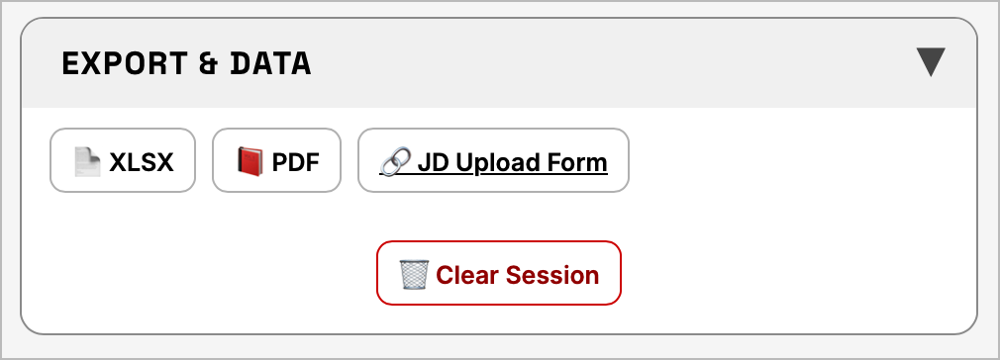
It's just a prompt, not automatic — choosing Yes wipes the current game so you're ready for the next one; No leaves everything exactly as it was, in case you need to export again or double-check something first.
Yes — 💾 Save and 📂 Load in the top toolbar write and read the entire game state (Event Details, every team, every score) as a JSON file, separate from the PDF/XLSX exports. Useful as a manual backup, or for handing a half-finished game to another device.
The app is built around not losing a night's scoring to a closed tab.
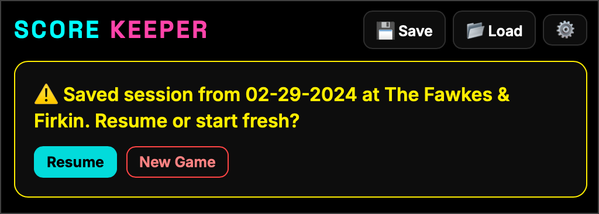
Every change autosaves to the browser as it happens. Reopening the app shows a "⚠️ Saved session found" banner with two choices: Resume restores everything exactly as it was — Event Details, every team, every score, Craft Prize state — and New Game discards it and starts clean.
The ⚙️ gear icon, top right.
Main Settings covers display preferences most hosts touch every game. Advanced Settings (collapsed by default, below the main list) holds the rarer, power-user controls — Point Adjustments, unlocking Event Details mid-game, timer widget behavior, drumroll controls, and more. All covered in Tips & Tricks.
The stuff that isn't obvious from just looking at the screen — including everything tucked into Advanced Settings.
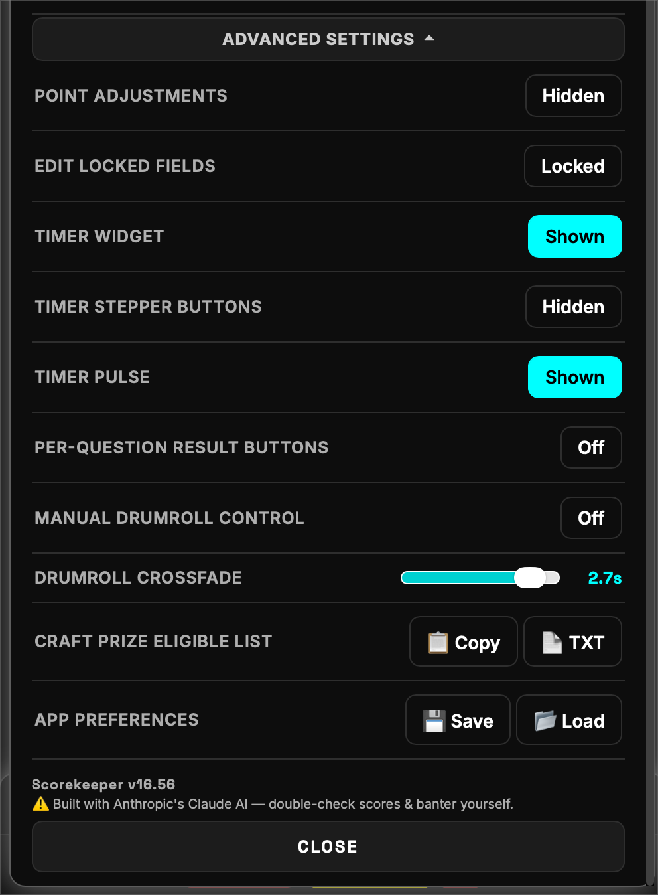
This works everywhere a team name appears — the Scores sidebar, a round's question rows, standings, Final Results — not just one dedicated screen. It opens a full breakdown: every question's wager and correct/incorrect call, the running score after each one, the bonus question tally, both wagers, and the same Guess/Diff math Final Results uses, explained tile by tile. It's the fastest way to answer "wait, how did they get that score?" in the middle of a live game.
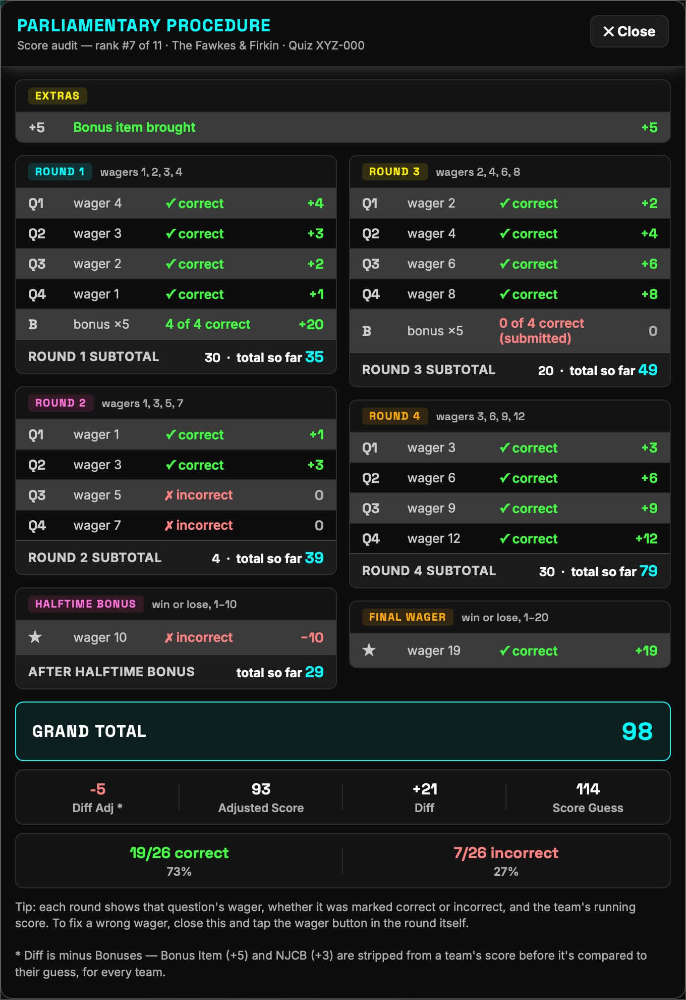
Every question has its own ↕ Sort and ↺ Reset buttons. Sort is a one-time move that bumps currently-unanswered teams to the top of that question — invaluable in a big room where you're waiting on the last few stragglers. Click it again to re-sort as more come in, and Reset restores the original entry order whenever you're done.
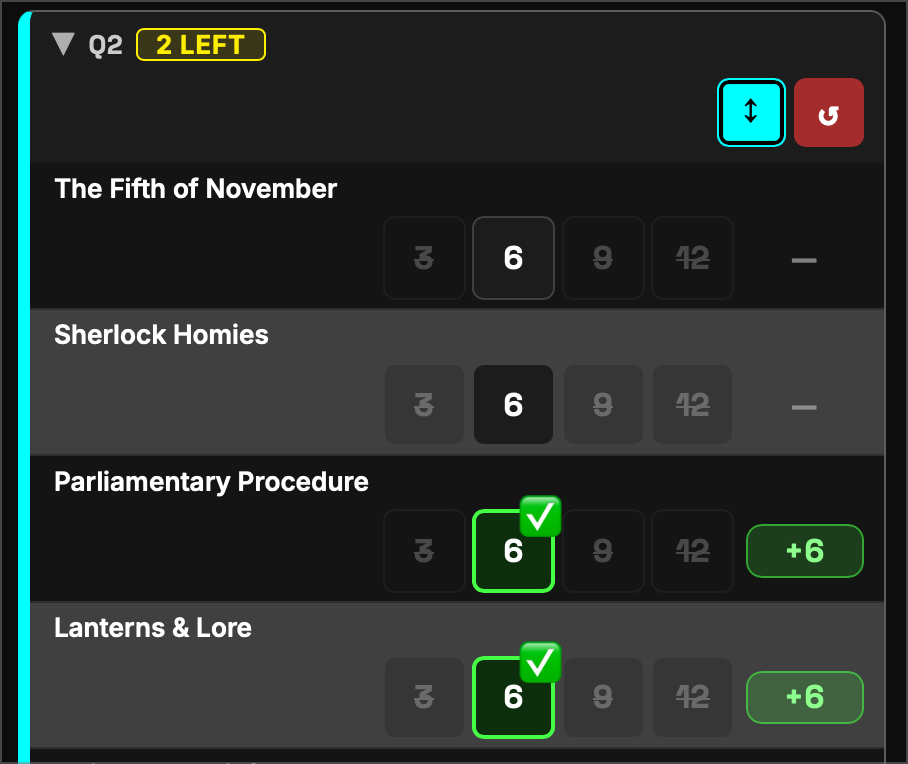
Off by default. Turning it on adds a small ± chip to every team row for manual point corrections that don't fit anywhere else — a scoring dispute resolved after the fact, a paper-scoresheet reconciliation, whatever comes up. It shows on the team row once toggled, and the current adjustment (if any) is visible right on the chip.
Event Details locks once scoring starts (see Event Details). This toggle reopens Date, Quiz ID, Location, Craft Partner, and Partner Town for editing without losing anything else. The same "Unlock to fix it" link appears inline in Event Details itself once it's locked, so you don't have to remember this is where it lives.
Three independent toggles for the on-screen question countdown: Timer Widget shows or hides it entirely, Timer Stepper Buttons adds −30/+30 nudge buttons for adjusting time on the fly, and Timer Pulse flashes the timer's background when time is running low.
Adds a live correct/incorrect tally next to each question's Sort/Reset buttons, so you can see at a glance how a question is trending without scrolling through every team's row.
Manual Drumroll Control adds buttons to stop the Craft Prize drumroll early and play the victory horn on demand — useful when a staff member is revealing the winner from a stack of papers rather than the app's own random draw timing. Drumroll Crossfade is a slider (0.2s–3.0s) controlling how gradually the roll winds down when you press Stop Drumroll.
📋 Copy and 📄 TXT export the craft partner, its town, and the eligible team names (Exclude Top already applied) as plain text — one name per line — so the actual drawing can be handed off to a separate drumroll or name-picker app if you'd rather run it there. The same list and buttons also appear directly inside the Craft Prize Drawing section once it's open.
Saves or loads only your display preferences (theme, size, timer defaults, and the rest of Settings) as a separate file from the game data itself — handy for carrying your preferred setup to a different device or browser without touching any game in progress there.
Something has to be typed in the field before scoring can
start, same as Host Name and Location — but once it's non-empty,
its format is free-entry: type anything and it's
accepted. The green checkmark / orange hint you might notice is
just a soft format nudge (a few letters plus a few numbers, like
AB-123) — it never stops scoring on its own,
because the ID format varies more than the field could
reasonably validate for.